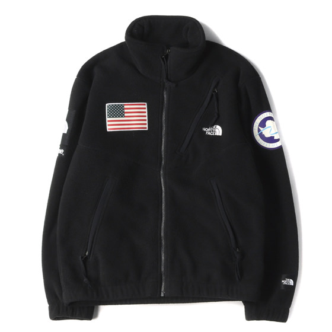

<select id="jackt">
  <option>おもて</option>
  <option>うら</option>
</select>

<br>


<script src="https://code.jquery.com/jquery-3.6.0.js"></script>

<script>
document.addEventListener('DOMContentLoaded', function () {
// HTML 文書の読み込みと解析が完了したとき	

	$("#jackt").on("change", function () {
		var choice = $(this).val();
		console.log(choice);

if (choice == 'うら') {
  $(".product").attr('src','ura.jpg').attr('alt','うら');
} else {
  $(".product").attr('src','omote.jpg').attr('alt','おもて');
}
  });
});
  
</script>